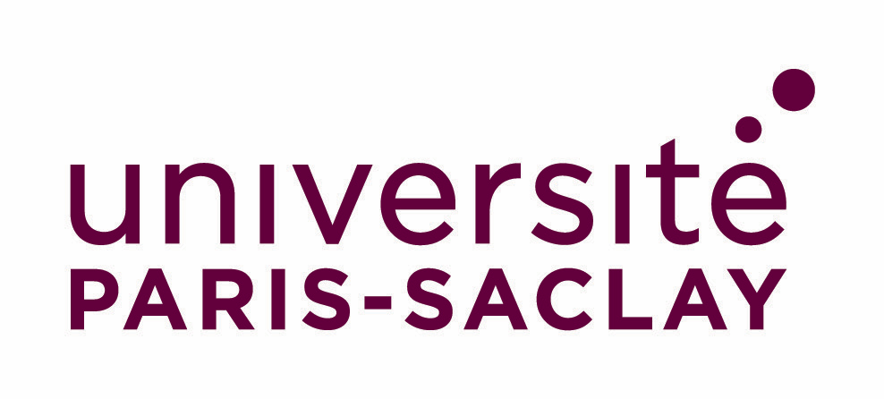
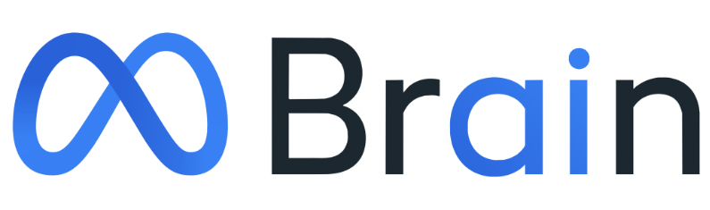
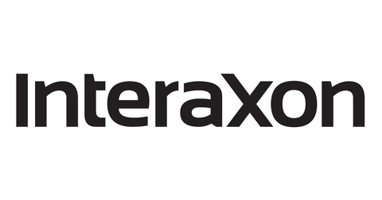
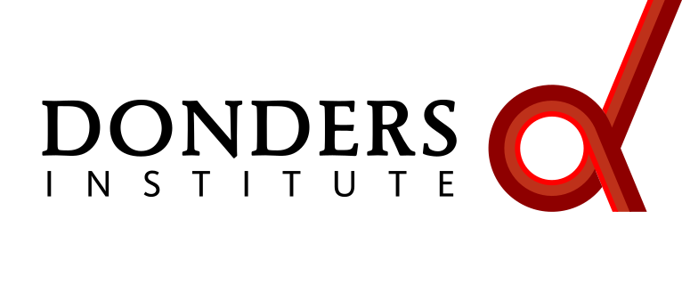
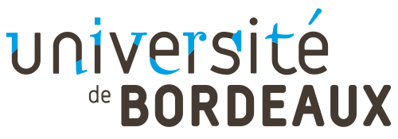
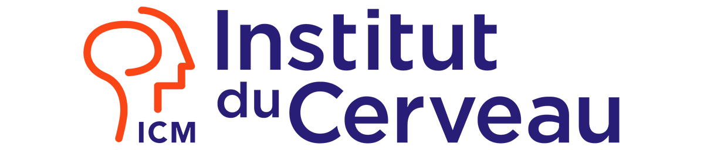

Bruno Aristimunha
Lead organizer · core
Research Scientist at Yneuro (France) and Honorary Research Associate at UC San Diego. PhD in Computer Science from Paris-Saclay and Federal University of ABC, advised by Sylvain Chevallier, Marie-Constance Corsi, and Raphael Y. de Camargo. Leads the Braindecode and MOABB libraries. Same lead as the 2025 EEG Challenge. Personal site →

Braindecode
MOABB
Arnault Caillet
Core · operations
Yneuro and Imperial College Bioengineering. PhD work on EMG biomechanics modelling. Core team for the EEG/EMG Foundation Challenge: runs day-to-day platform operations and connects the Yneuro engineering side with the academic track teams.
Hubert Banville
Track 01 · EEG-to-IMG
Research Scientist in the Brain & AI group at Meta FAIR. PhD at Inria Parietal on self-supervised learning for EEG; previously a researcher at InteraXon. Designs the SSL pretraining for the EEG-to-IMG encoder.



SSL
Pierre Guetschel
Core · decoding methods
PhD candidate at the Donders Institute. Deep learning for EEG decoding with a focus on transfer learning, self-supervised learning, and foundation models. Core developer of Braindecode and MOABB.

Braindecode
MOABB
Jean-Rémi King
Track 01 · Brain & AI lead
CNRS researcher (ENS, detached) leading the Brain & AI team at Meta AI. Studies the brain and computational bases of human intelligence; develops models that decode brain activity from MEG, EEG, electrophysiology, and fMRI.
Vinay Jayaram
Track 01 · Alljoined
At Alljoined, assembles large-scale, image-aligned EEG corpora. Owns the dataset side of Track 1: stimulus protocols, alignment, and the public release used as the warm-up split.
Ugo Nunes
Track 01 · Alljoined
Alljoined. Builds the data pipelines and evaluation harness for Track 1, keeping the EEG-to-image retrieval scoring reproducible across labs and submission environments.
Simon Kojima
Track 02 · NEARBY
Postdoctoral researcher at Inria Bordeaux on the NEARBY project, working on noise- and variability-robust BCIs for out-of-the-lab use. Motor-imagery BCIs, EEG variability, and ML for neural decoding.
NEARBY
Pauline Dreyer
Track 02 · PROTEUS
PhD candidate at Inria Bordeaux on the PROTEUS project. Active brain-computer interfaces with a focus on understanding and addressing within-user variability, the same question Track 2 evaluates.
PROTEUS
Raphaëlle N. Roy
Track 02 · neuroergonomics
Professor of neuroergonomics & physiological computing at ISAE-SUPAERO. Co-founder & vice-president of the French BCI association; organised the first passive-BCI competition. Adds the operator-state perspective to BCI evaluation.
Fabien Lotte
Track 02 · Potioc lead
Research Director at Inria Bordeaux & LaBRI, leading project-team Potioc on Brain-Computer Interfaces. PI of ANR REBEL/PROTEUS and ERC BrainConquest/SPEARS. USERN Prize 2022; Lovelace-Babbage prize 2023.

Potioc
Jiansheng Niu
Track 03 · Sleep onset
InteraXon. Owns the consumer-wearable side of Track 3: recording protocols, signal-quality monitoring, and the comparison of Muse-grade EEG against clinical sleep-staging baselines.
Maurice Abou Jaoude
Track 03 · sleep ML
Senior Research Scientist at InteraXon (makers of the Muse wearable EEG and fNIRS headband). Builds algorithms that turn raw EEG into clinical signals, including automated sleep staging at expert agreement and non-invasive detection of neurological abnormalities.
Muse
Christopher Aimone
Track 03 · innovation
Chief Innovation Officer and co-founder of Muse by InteraXon. Leads R&D advancing wearable neurotech with sleep science and AI; background spans VR/AR, humanistic intelligence, computer vision, and robotics.
Muse
Pranav Mamidanna
Track 04 · EMG-to-Text
Research Fellow at Imperial College London. Works at the boundary of AI and neuroscience, combining mathematical models of physical and biological systems with modern AI representations. Targets clinical translation.
 Bioengineering
Bioengineering
Alex Gramfort
Track 04 · EMG-to-Text
Senior Research Scientist Manager at Meta Reality Labs, Paris. Works on machine learning for surface-EMG decoding. Previously Research Director at Inria leading the MIND/Parietal team. Statistical ML, signal processing, and biosignal computing.
Marie-Constance Corsi
Track 02 · interpretability
Inria Research Scientist at Paris Brain Institute (NERV Lab). Identifies neurophysiological markers of BCI training and develops interpretable AI tools for neurological-disease diagnosis. Reviews Track 2 submissions for clinical and interpretability quality, not just leaderboard score.

Thomas Moreau
Core · evaluator
Research scientist at Inria, MIND Team. Statistical ML, optimization, and signal processing for M/EEG decoding; maintainer of benchopt; contributor to braindecode, MNE-Python, MOABB.
benchopt
Inria MIND
Joséphine Raugel
Track 01 · EEG-to-IMG
PhD candidate at ENS and Meta FAIR. Aligns deep-network and neural-data representations; co-author of NeuralSet (Python neuro-AI package) and TRIBEv2 (foundation brain encoder).
 NeuralSet
TRIBEv2
NeuralSet
TRIBEv2
Lionel Kusch
Core · AWS infra
Machine-learning infrastructure engineer at Yneuro. Cloud deployment, software engineering, and computational-neuroscience research projects. Owns the AWS submission and ranking pipeline.
Thomas Semah
Host org · Yneuro CEO
Founder & CEO of Yneuro, the host organisation for the EEG/EMG Foundation Challenge. CentraleSupélec / ESPCI Paris-PSL alum, Stanford School of Medicine master's. Yneuro provides infrastructure and operational support for the challenge.
CEO
Seyed Yahya Shirazi
Core · data & standards
Assistant Project Scientist at UC San Diego. Led HBN-EEG curation and annotation. Lead Scientist for BIDS extension proposals to EMG and Stimulus. Core member of the HED working group and the EEGLAB development team.
BIDS · EMG
HBN-EEG
Scott Makeig
Senior advisor · ICA pioneer
Founding director of the Swartz Center at UCSD. Pioneer in EEG analysis and the development of Independent Component Analysis (ICA) for brain-signal decomposition; leader in mobile brain/body imaging (MoBI).
ICA
Isabelle Guyon
Senior advisor · ChaLearn
Director, Research Scientist at Google DeepMind, in detachment from her professorship at Université Paris-Saclay. President of ChaLearn, community lead of Codalab, JMLR action editor, NIPS 2016 program co-chair, NIPS 2017 general co-chair. 2020 BBVA Frontiers in Research Award (with Schölkopf and Vapnik) for SVMs.
Terrence Sejnowski
Senior advisor · Salk
Co-developed the Boltzmann machine; foundational work in deep learning. Connects neuroscience and machine learning. Carries forty years of context on what the field has and hasn't already tried.
Sylvain Chevallier
Core · Codabench
Full Professor at Université Paris-Saclay, board member of DATAIA/ClusterIA, co-leader of the TAU team. Leads the Codalab/Codabench framework, the platform the competition runs on.
Codabench
Arnaud Delorme
Core · EEGLAB
Leads the EEGLAB project. Research Director at CNRS, Research Scientist at UCSD. Owns the reproducibility audit at test-freeze, which is what lets any top entry be replayed byte-for-byte from another team's pipeline.
EEGLAB